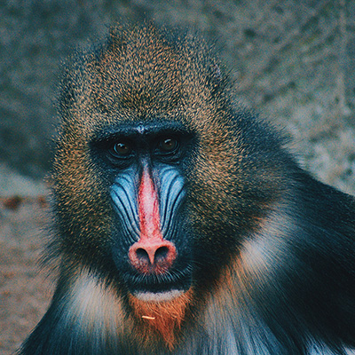

Animais Fantásticos


Raposa
Raposas são animais com características semelhantes às dos cachorros. Trata-se de um animal com focinho pontiagudo, crânio achatado, orelhas eretas e pontudas e uma cauda espessa.
Sua cauda relaciona-se com o equilíbrio e também com o aquecimento do corpo do mamífero, sendo uma excelente arma contra o frio.
As raposas podem variar em tamanho, mas, em geral, apresentam entre 92 cm e 107 cm e pesam 5 kg.
A maioria das raposas tem hábitos solitários. Elas geralmente ficam dentro de determinada área, sendo territoriais.
Esquilo
O esquilo (Sciurus vulgaris) é um mamífero pertencente à família Sciudidae e à ordem rodentia.
Sua família comprende os esquilos arborícolas, terrestres, voadores e as marmotas, entre outros.
Durante a gestação, os pais preparam o ninho para receber os filhotes. Constroem ninhos com folhas e galhos, em ramos muito altos, em árvores como a cajarana, para abrigarem as suas crias da chuva e do vento.
Os quatro dentes dianteiros desses animais crescem continuamente
Urso
Os ursos têm vagado por montanhas, florestas, selvas e espaços árticos por milhões de anos. Em 2017, pesquisadores relataram os restos fósseis de um urso de 3,5 milhões de anos no Canadá.
E, assim como seus parentes modernos, este urso também gostava de doces. Isso porque os pesquisadores encontraram evidências de cárie dentária no fóssil - provavelmente causada pela grande ingestão de frutas doces.
Os ursos são animais muito inteligentes. Eles podem distinguir números grandes e pequenos de pontos com tanto sucesso quanto os macacos.
Esses animais altamente sensíveis não são apenas capazes de demonstrar felicidade, mas também tristeza e dor.
Lobo
A alcateia é liderada por um casal reprodutor, que permanece junto a vida toda. O líder (alfa) pode ser eleito por briga ou pela liberação de substâncias (feromônios), que deixam os outros submissos. O alfa manda em todos. O segundo macho mais forte (beta) vira o alfa se o primeiro se ferir ou morrer.
Quer saber quem é quem numa alcateia? Basta ver a ordem em que os lobos se alimentam depois da caça: os mais fortes serão os primeiros, comendo as partes de maior valor energético do animal abatido (fígado, por exemplo).
A cor de seus olhos varia entre amarelo, verde até castanho-escuro. Ao redor dos olhos, podem ser observados anéis claros com uma mancha escura que se estende até a orelha.
Babuínos (Mandril)
Tudo indica que a própria evolução da espécie é responsável pela profusão de cores na cara e na bunda dos mandris, um grupo de babuínos encontrado somente nas florestas tropicais de países africanos.
Vivendo em grupos de até 50 indivíduos liderados por um macho dominante, os mandris são principalmente herbívoros, mas também podem se alimentar de insetos e pequenos vertebrados.
Para se proteger de seus predadores, especialmente dos leopardos, eles escancaram a boca e exibem seus grandes e afiados caninos superiores.
Por causa da destruição das florestas onde vivem, os mandris figuram na lista de animais ameaçados de extinção.
Leão
Embora os machos imponham respeito pelo porte, quem lidera o grupo sempre é a leoa. Ainda que sejam menores fisicamente, as fêmeas ocupam o posto de destaque, guiando os outros e sendo referência para os mais novos.
O rugido do leão é tão poderoso que pode ser ouvido a 8 km de distância. Esse som pode ter vários sentidos: comunicação, demarcação de território e busca, e competição por cópulas.
Podendo dar um salto de 10m, quando está em ação, a velocidade é tão grande que os calcanhares não tocam o chão.
Durante todo o ano, a fêmea está preparada para receber o espermatozoide do macho. Outro fato curioso é que nascem até 4 filhotes por gestação.
FAQ
- Como identificar a idade de um Leão?
- A cor da juba diz a idade do leão. Você sabia que quanto mais escura é a cor da juba, mais velho é o leão? Essa talvez seja uma das curiosidades sobre leão mais incríveis!
- Sobre o lobo.
- Não poderemos conhecer quais são suas emoções, sensações, e instintos em um determinado momento, por isso, se alguma vez estivermos próximos desta espécie na natureza, será melhor não perturbar seu espaço.
- Hibernação dos ursos.
- Algumas espécies baixam seu metabolismo e ficam letárgicos, com diminuição da frequência cardíaca e respiratória (quase em estado de hibernação), em tocas ou cavernas, durante o inverno. Usam como fonte de energia apenas a sua gordura corporal.
- Diferenças entre o Mandril e outras espécies primatas.
- O mandril é um dos primatas que as pessoas reconhecem mais facilmente graças à cor do seu rosto. Ele é classificado como uma das espécies de macacos do Velho Mundo e é um dos animais mais perigosos do planeta.


- 


Números
Contato

- robertoconradorc@gmail.com
- 55 (77) 9 9155-6513
- Avenida Aurora, n 180
- Bahia
- Nós ajude com BITCOIN
- Segunda à Sexta das 8:00 as 18:00